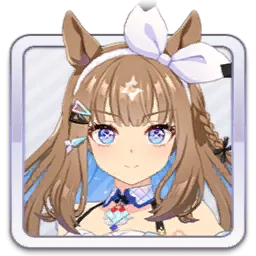
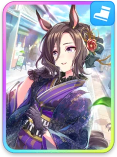
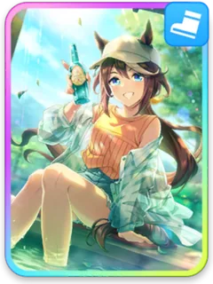
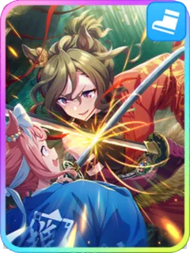
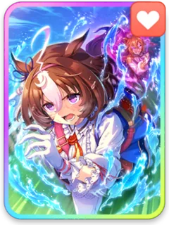
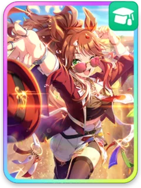

必要SP
ウマ娘 SP 計算
初期編成サンプル
[The Changer]アーモンドアイ
9,715SP
前提
金スキル
スピグルーヴ
王手
千鍛万錬
スピテイオー
迸る気迫
正々堂々
スピタップ
トップランナー
飛竜乗雲
スタドトウ
弧線のプロフェッサー
パスファインダー
賢ヤング
尻尾の滝登り
前人未到
友人たづな
時中の妙
お先に失礼っ！
RMJ
いいとこ入った！
リンク
ネバーギブアップ
シナリオ
極上の感謝を！
条件
シナリオ トレセン軒 ／ ヒント Lv5 ／ 継承固有 ×4 · Lv3
金は計算で選ばれているサポ・シナリオ由来のみ。除外は件数のみ。結果表は含まない。
金は計算で選ばれているサポ・シナリオ由来のみ。除外は件数のみ。結果表は含まない。
設計スナップショットより生成 · 記事・ポスト貼付用

育成ウマ娘
[The Changer]アーモンドアイ




